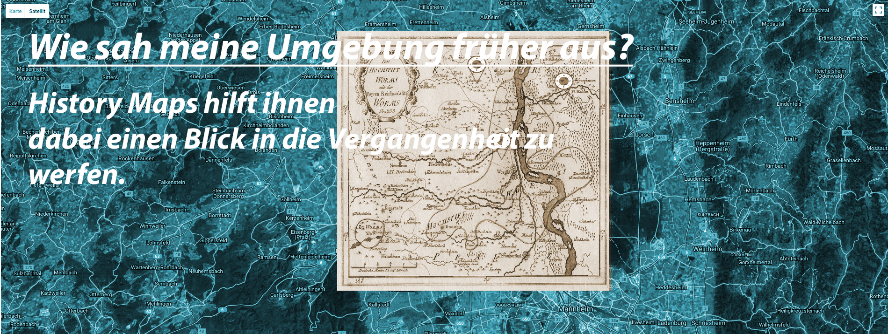

HistoryMaps
Die Datenbank für Historische Karten

Dazu bietet diese Seite auch für Laien einfach bedienbare Werkzeuge zum zuordnen von Informationen zu historischen Karten.
Musikquelle: Rob Cavallo Music